Videos del proyecto
El sitio, el panel y lo que viene, en video. Tocá cualquiera para verlo; cada uno tiene su link propio para compartir dentro del equipo.
Cómo funciona, de punta a punta
工程Una compra real en el sitio y lo que pasa en la casa: grabado en vivo, con voz.
Estado de obra
家Qué está hecho, cómo se ve y qué necesitamos de la casa para lanzar.
Tutoriales del panel
筆El manual en video para el equipo: paso a paso sobre las pantallas reales, con datos de ejemplo.
3:57
01 · Entrar al panel
La dirección, el ingreso, elegir la clave la primera vez, recuperarla y qué ve cada rol.
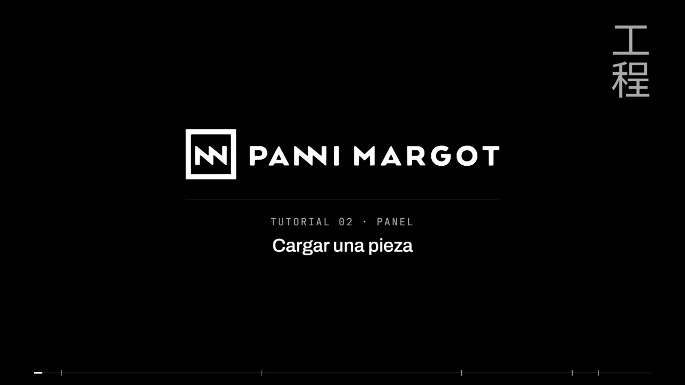
3:52 02 · Cargar una pieza Alta rápida y ficha completa: precio, talles, stock, medidas, a pedido, complementos, vista previa y publicar. 3:57 03 · Fotos y videos La biblioteca, subir o elegir fotos, insertar videos de YouTube, Vimeo o TikTok, y ordenarlos.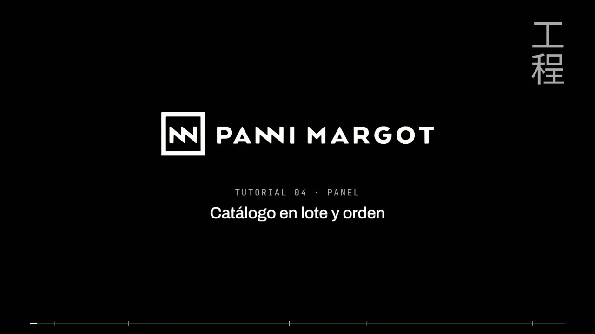
3:46 04 · Catálogo en lote y orden Filtros, acciones en lote con vista previa, liquidación, precios, y el orden de la grilla arrastrando.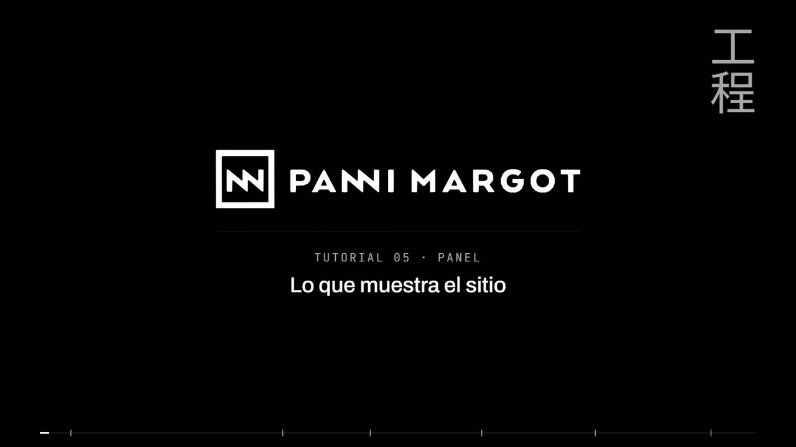
3:53 05 · Lo que muestra el sitio Portada, banners, franja de anuncio, textos del sitio, ajustes y redirecciones.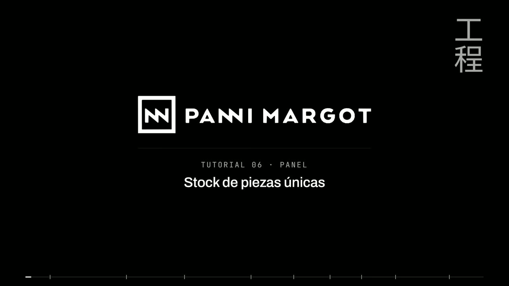
3:59 06 · Stock de piezas únicas Inventario y conteo, apartados, traslados, kardex, alertas y etiquetas QR. 3:50 07 · Pedidos y boutique El tablero, los pedidos y sus estados, vender en la boutique, devoluciones, arrepentimiento, cupones y tarjetas de regalo.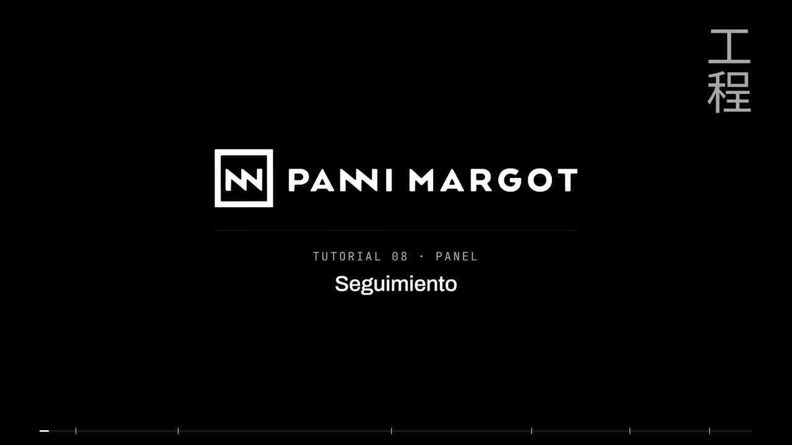
3:52 08 · Seguimiento Audiencia, campañas con el editor de bloques, cupones personales, newsletter y automatizaciones. 3:57 09 · WhatsApp y cuentas de clientas La bandeja de WhatsApp, cómo se conecta la línea, y las cuentas de clientas con Google.Marketing · borradores
一点物Borradores para que Panni los vea y apruebe. No están publicados; los textos son provisorios.
0:42
Manifiesto · horizontal
Los textos de la casa, tal cual: genderless fashion, la misión y «Somos todos Carbono…».
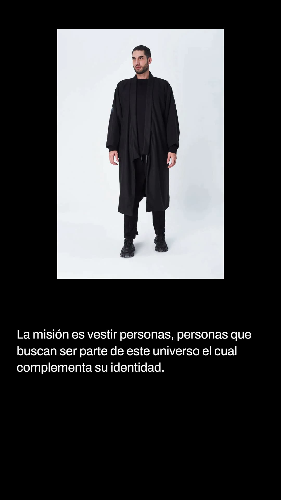
0:42 Manifiesto · vertical El mismo manifiesto para Reels e Historias.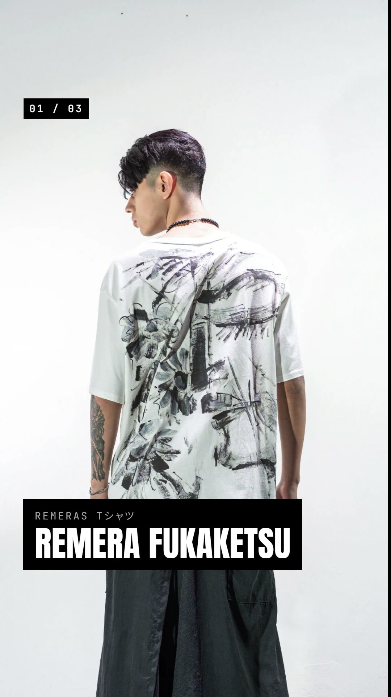
0:15 Anuncio de lanzamiento Plantilla para anunciar piezas nuevas con acceso anticipado para la lista.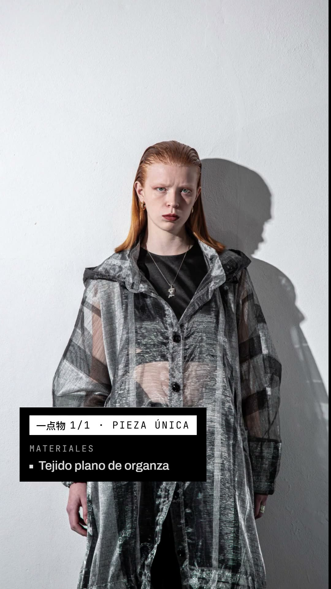
0:17 Trench Shukai Organza · vertical Pieza única 1/1: fotos que se revelan a color, nombre, sellos y precio.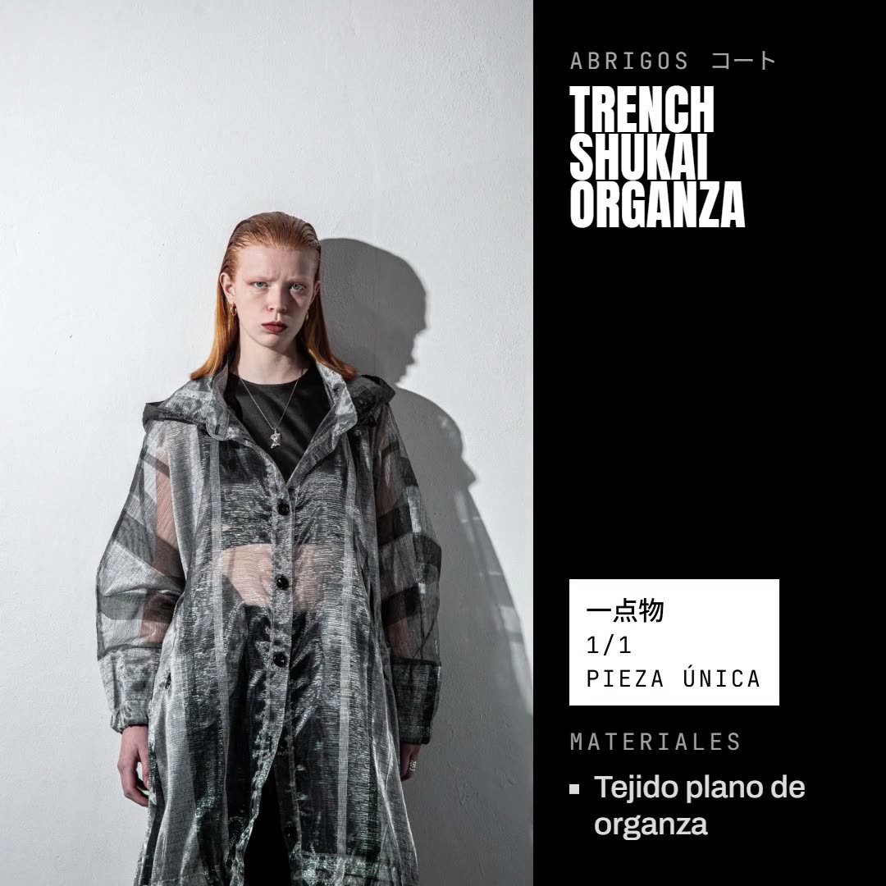
0:17 Trench Shukai Organza · cuadrado La misma pieza para el feed.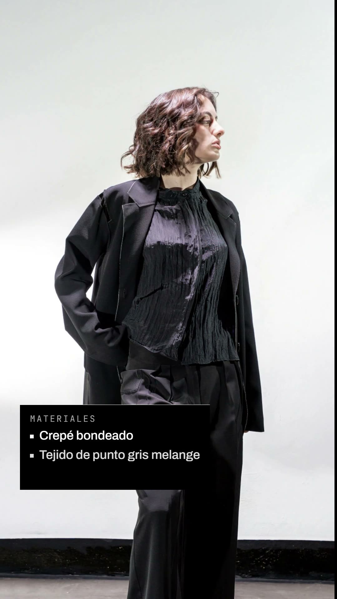
0:17 Blazer Nuime · vertical Generado automáticamente desde el catálogo.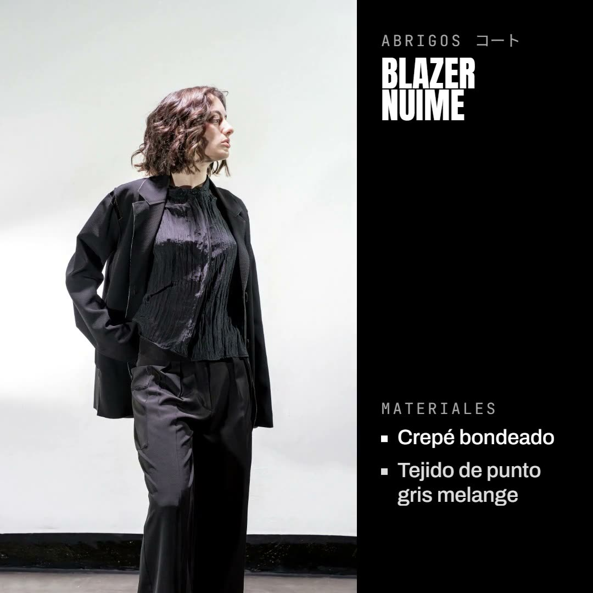
0:17 Blazer Nuime · cuadrado La misma pieza para el feed.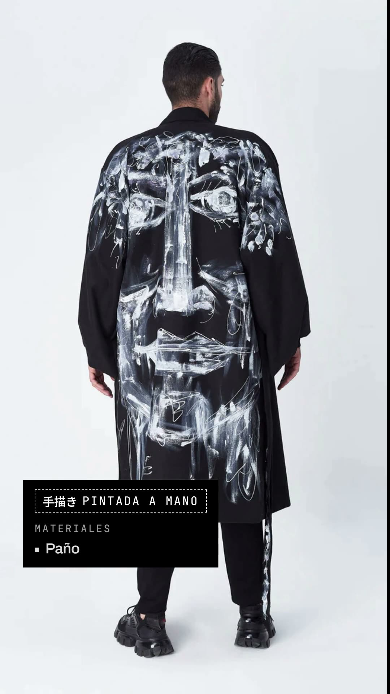
0:17 Tapado Kimono Brushed Takai · vertical Pieza pintada a mano, 手描き.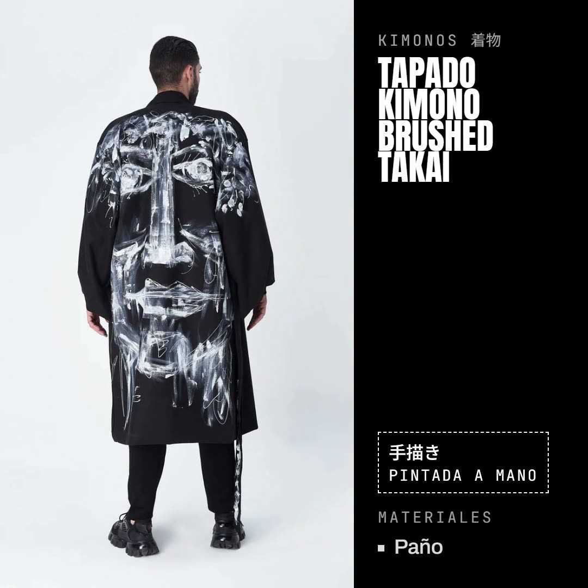
0:17 Tapado Kimono Brushed Takai · cuadrado La misma pieza para el feed.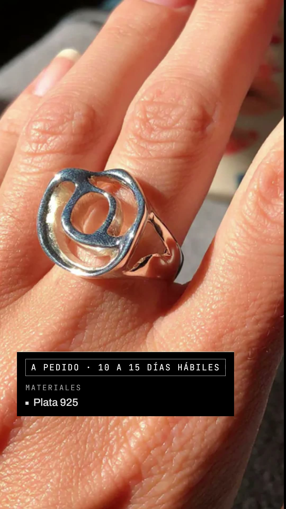
0:15 Saga · Flora Ring · vertical Joyería a pedido de Saga Jwls, con su plazo de producción.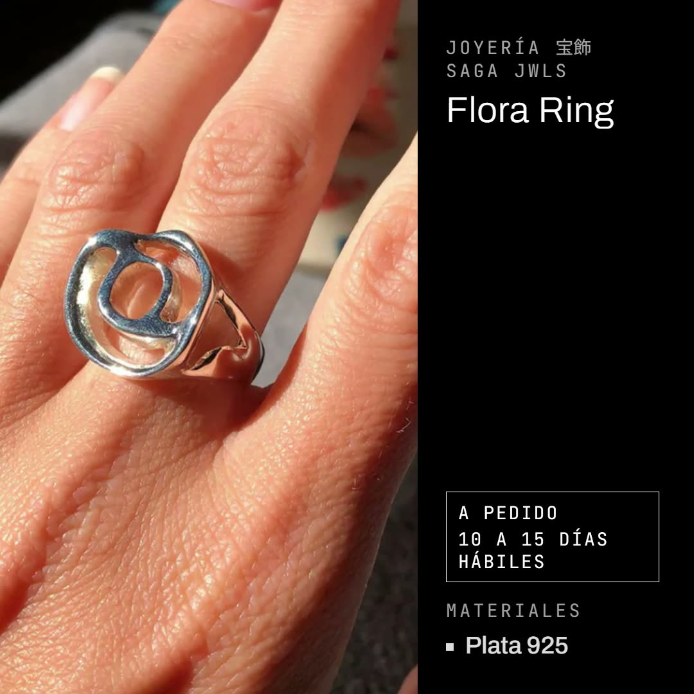
0:15 Saga · Flora Ring · cuadrado La misma pieza para el feed.